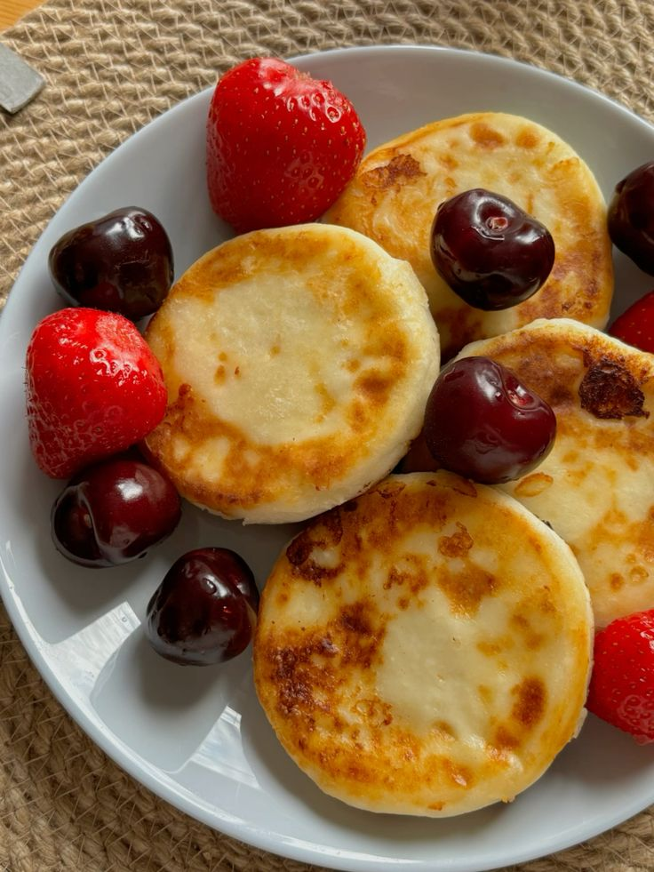

Сырник с ягодами

Нажмите на изображение, чтобы увидеть в полном размере
Описание
Нежный творожный сырник с добавлением свежих ягод (черника, малина, клубника — в зависимости от сезона). Готовится из отборного творога и подается со сметаной и ягодным соусом. Напоминает вкус детства и идеально подходит для тех, кто любит полезные десерты.
Характеристики
- Состав: Творог 9%, яйца, сахар, мука рисовая, ягоды свежие/замороженные
- Вес: 150 г
- Калорийность: 210 ккал
- Срок хранения: 24 часа
- Аллергены: Молочные продукты, яйца, глютен
- Цена: 180 руб.